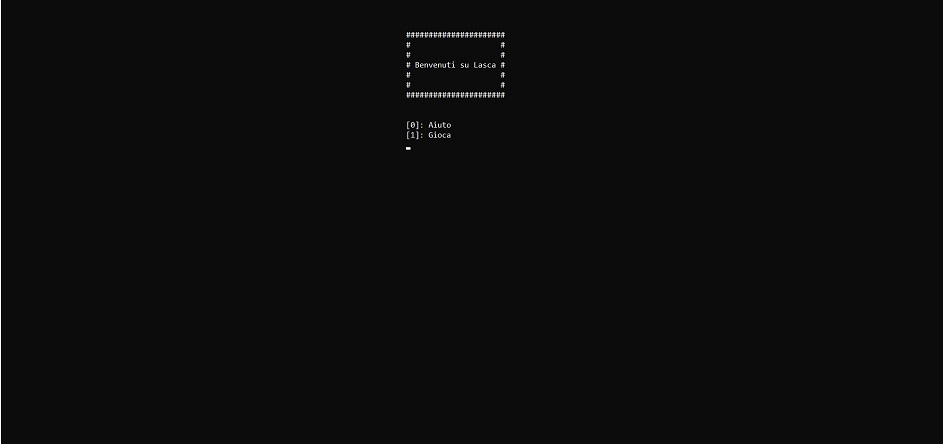
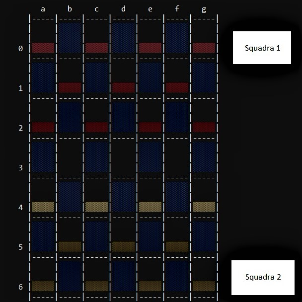
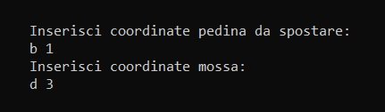
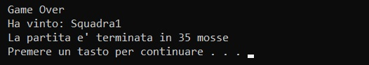

Come si gioca a miniLaska?
miniLaska è una variante del gioco lasca (http://www.lasca.org).
Dopo aver avviato il programma, si dovranno scegliere le impostazioni di gioco, che vengono definite sulla base delle risposte dell'utente.
Per confermare la risposta, premere il tasto 'invio'. Le risposte, che l'utente può confermare, sono identificate da [<risposta>].
La larghezza della scacchiera è definita sulla base della larghezza della colonna.

Definite le impostazioni di gioco, il gioco si avvia. La squadra posizionata nelle prime righe darà inizio al gioco (Squadra 1 in foto).

Per inserire le coordinate della mossa, digitare la lettera della colonna seguita da uno spazio e dal numero riga, come si vede in figura. Successivamente premere 'invio'.
Come da regola di gioco, se una pedina o torre di pedine raggiunge l'estremità opposta della scacchiera, viene promossa.
Stilisticamente, le pedine promosse si differenziano dalle pedine non-promosse per la tonalità di colore più chiaro.

Conclusione del gioco:
Il gioco si conclude nel momento in cui una delle due squadre non ha più mosse a disposizione.
Per uscire dal gioco, premere un qualsiasi tasto.
